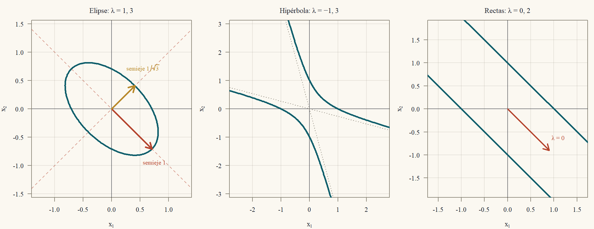
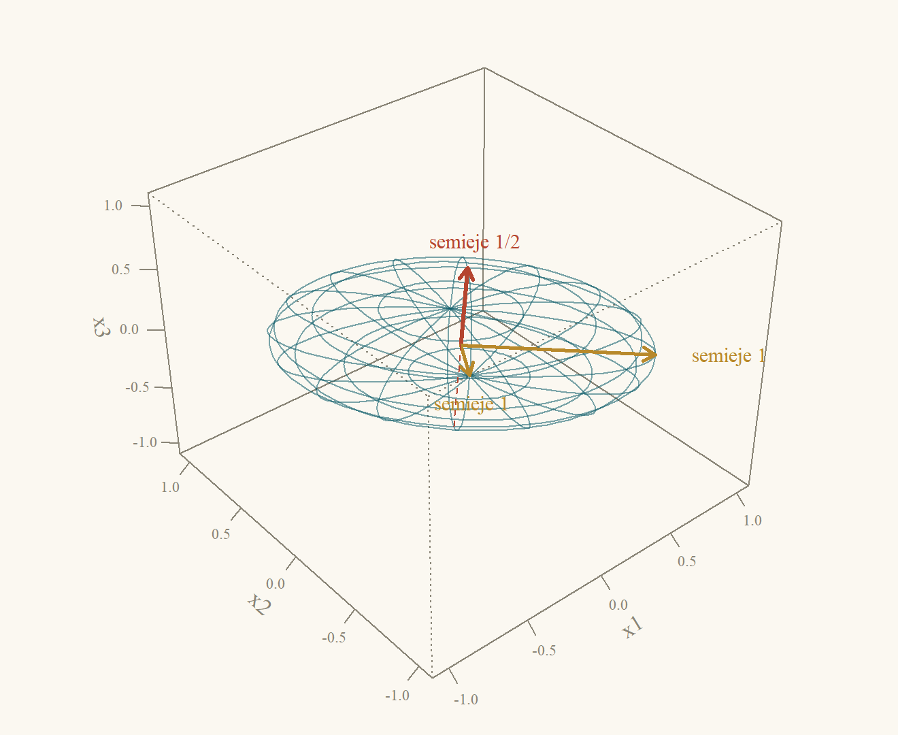
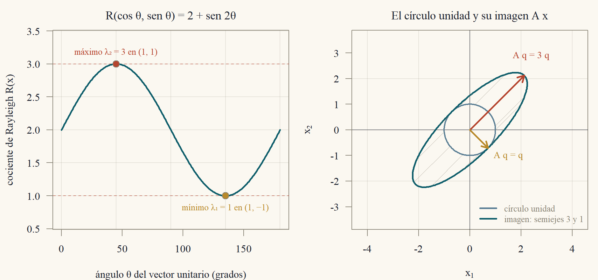
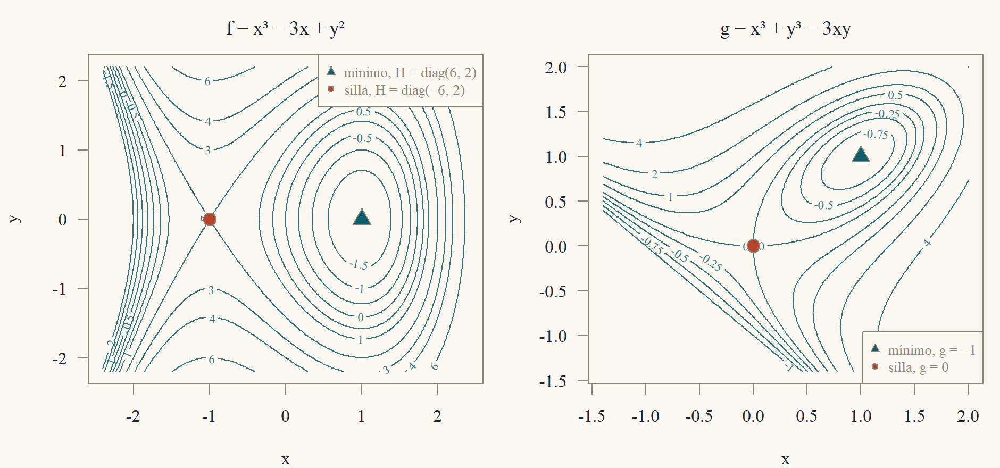
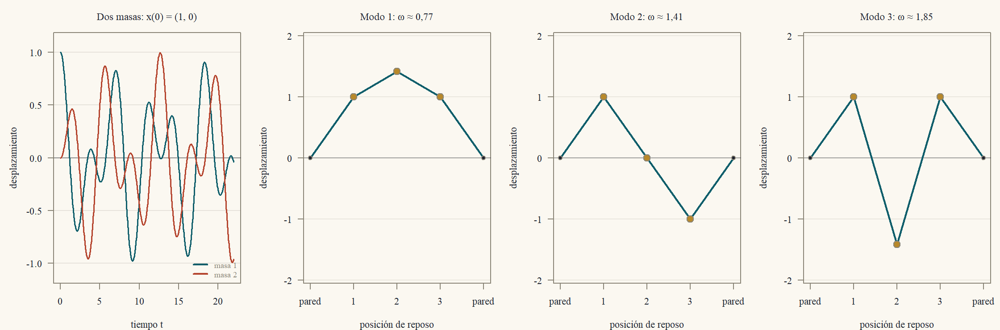

Clase 8 · Matrices simétricas y definidas positivas
Ejes principales, energía y vibraciones
1 Una elipse inclinada
La curva \(2x^2 + 2xy + 2y^2 = 1\) es una elipse, pero está inclinada: el término \(2xy\) la tuerce. ¿Hay un par de ejes en los que la ecuación se escriba sin ese término? Probemos con los ejes diagonales, \[ u = \frac{x + y}{\sqrt2},\qquad v = \frac{x - y}{\sqrt2},\qquad\text{es decir}\qquad x = \frac{u + v}{\sqrt2},\quad y = \frac{u - v}{\sqrt2}. \] Entonces \[ \begin{aligned} 2x^2 + 2y^2 &= (u + v)^2 + (u - v)^2 = 2u^2 + 2v^2,\\ 2xy &= (u + v)(u - v) = u^2 - v^2, \end{aligned} \] y al sumar, \(2x^2 + 2xy + 2y^2 = 3u^2 + v^2\). En los ejes \((u,v)\) la curva es \(3u^2 + v^2 = 1\), una elipse derecha, con semiejes \(1/\sqrt3\) (a lo largo de \(u\)) y \(1\) (a lo largo de \(v\)). Los números \(3\) y \(1\) que aparecieron son los valores propios de la matriz simétrica \[ A = \begin{pmatrix}2&1\\1&2\end{pmatrix},\qquad 2x^2 + 2xy + 2y^2 = \begin{pmatrix}x&y\end{pmatrix}A\begin{pmatrix}x\\y\end{pmatrix}, \] y las direcciones \((1,1)\) y \((1,-1)\) de los ejes nuevos son sus vectores propios (Ejemplo 1). Esta clase muestra que toda matriz simétrica real tiene ejes así, perpendiculares entre sí, y cosecha las consecuencias: la geometría de las elipses y elipsoides, el criterio para saber si una matriz es “positiva” (lo que garantiza que una energía sea positiva o que un punto crítico sea un mínimo), una factorización que resuelve sistemas con la mitad del trabajo, y cómo vibran de verdad un sistema de masas y resortes y un cuerpo rígido que gira.
2 El teorema espectral
Sea \(A\) una matriz simétrica real \(n\times n\) (\(A' = A\)). La Clase 7 mostró que una matriz puede tener valores propios complejos y vectores propios que no son perpendiculares. Para las simétricas, ninguna de las dos cosas ocurre.
Lema 1 (Los valores propios de una simétrica real son reales) Si \(A\) es real y simétrica y \(Av = \lambda v\) con \(v\in\mathbb{C}^n\), \(v\ne0\), entonces \(\lambda\in\mathbb{R}\).
Si \(\lambda\) fuera complejo, \(\lambda = \bar\lambda\) fallaría. Calculo el escalar \(v^*Av\) de dos maneras: con \(Av = \lambda v\) sale \(\lambda\|v\|^2\), y, por la simetría, ese mismo escalar es igual a su propio conjugado, o sea real.
Demostración. Sea \(v^* = \bar v'\) el vector fila conjugado, de modo que \(v^*v = \sum_i|v_i|^2 = \|v\|^2>0\). De \(Av = \lambda v\) sale \(v^*Av = \lambda v^*v = \lambda\|v\|^2\). Por otro lado, el escalar \(s = v^*Av\) cumple \[ \bar s = \overline{v^*Av} = (v^*Av)^* = v^*A^*(v^*)^* = v^*A'v = v^*Av = s, \] porque \(A\) es real (\(A^* = A'\)) y simétrica (\(A' = A\)). Un número igual a su conjugado es real. Luego \(\lambda = s/\|v\|^2\) es real.
Lema 2 (Vectores propios de valores propios distintos son perpendiculares) Si \(A' = A\), \(Av = \lambda v\), \(Aw = \mu w\) y \(\lambda\ne\mu\), entonces \(v\cdot w = 0\).
Demostración. Por una parte, \((Av)\cdot w = \lambda\,v\cdot w\). Por otra, \((Av)\cdot w = v'A'w = v'Aw = v\cdot(Aw) = \mu\,v\cdot w\). Restando, \((\lambda - \mu)\,v\cdot w = 0\), y como \(\lambda\ne\mu\), \(v\cdot w = 0\).
El Lema 2 no basta: un valor propio repetido puede tener un espacio propio de dimensión mayor que uno, y ahí hay que elegir vectores perpendiculares. El teorema siguiente dice que siempre se puede, y lo demuestra de una vez para todos los casos.
Teorema 1 (Teorema espectral) Sea \(A\) una matriz real simétrica \(n\times n\). Existen una matriz ortogonal \(Q\) (\(Q'Q = I\)) y una matriz diagonal real \(\Lambda = \operatorname{diag}(\lambda_1,\dots,\lambda_n)\) tales que \[ A = Q\Lambda Q'. \] Las columnas \(q_1,\dots,q_n\) de \(Q\) son una base ortonormal de \(\mathbb{R}^n\) formada por vectores propios, \(Aq_i = \lambda_iq_i\).
Inducción sobre \(n\). Tomo un valor propio \(\lambda_1\) (real, por el Lema 1) con un vector propio unitario \(q_1\), y lo completo a una base ortonormal con Gram–Schmidt (Clase 5). En esa base, \(A\) queda con la forma \(\begin{pmatrix}\lambda_1&0\\0&B\end{pmatrix}\): la primera columna sale de \(Aq_1 = \lambda_1q_1\) y la primera fila, de la simetría. El bloque \(B\) es simétrico y más chico, así que se le aplica la hipótesis de inducción.
Demostración. Para \(n = 1\), \(A = (a)\) y se toma \(Q = (1)\), \(\Lambda = (a)\).
Supongamos el teorema cierto para matrices simétricas de tamaño \(n - 1\) y sea \(A\) de tamaño \(n\).
Un valor propio y su vector. El polinomio característico tiene una raíz \(\lambda_1\in\mathbb{C}\) (Clase 7: es un polinomio de grado \(n\)), real por el Lema 1. Entonces \(A - \lambda_1I\) es una matriz real singular, y tiene un vector \(q_1\in\mathbb{R}^n\) no nulo en su espacio nulo (la eliminación gaussiana sobre \(\mathbb{R}\) produce una variable libre real, Clase 1). Normalizamos para que \(\|q_1\| = 1\).
Una base ortonormal. Por Gram–Schmidt (Clase 5) existe una base ortonormal de \(\mathbb{R}^n\) cuyo primer vector es \(q_1\). Sean \(W\) la matriz \(n\times(n-1)\) con los otros vectores como columnas y \(Q_1 = (q_1\ \ W)\), ortogonal.
La forma de \(Q_1'AQ_1\). El producto \(Q_1'AQ_1\) es simétrico, porque \((Q_1'AQ_1)' = Q_1'A'Q_1 = Q_1'AQ_1\). Su primera columna es \(Q_1'Aq_1 = \lambda_1Q_1'q_1 = \lambda_1e_1\), porque las columnas de \(Q_1\) son ortonormales (\(Q_1'q_1 = e_1\)). Por simetría, su primera fila también es \((\lambda_1\ \ 0\ \cdots\ 0)\). Así, \[ Q_1'AQ_1 = \begin{pmatrix}\lambda_1&0\\0&B\end{pmatrix},\qquad B = W'AW, \] y \(B\) es simétrica de tamaño \(n - 1\) (porque \(B' = W'A'W = B\)).
Inducción. Por hipótesis de inducción, \(B = Q_2\Lambda_2Q_2'\) con \(Q_2\) ortogonal y \(\Lambda_2\) diagonal real. Sea \[ Q = Q_1\begin{pmatrix}1&0\\0&Q_2\end{pmatrix}. \] Es ortogonal, por ser producto de ortogonales (\(Q'Q = \begin{pmatrix}1&0\\0&Q_2'\end{pmatrix}Q_1'Q_1\begin{pmatrix}1&0\\0&Q_2\end{pmatrix} = I\)). Además, \[ Q'AQ = \begin{pmatrix}1&0\\0&Q_2'\end{pmatrix}\begin{pmatrix}\lambda_1&0\\0&B\end{pmatrix}\begin{pmatrix}1&0\\0&Q_2\end{pmatrix} = \begin{pmatrix}\lambda_1&0\\0&Q_2'BQ_2\end{pmatrix} = \begin{pmatrix}\lambda_1&0\\0&\Lambda_2\end{pmatrix} = \Lambda, \] y multiplicando por \(Q\) a la izquierda y por \(Q'\) a la derecha, \(A = Q\Lambda Q'\).
Un valor propio repetido no es problema: el teorema entrega igual una base ortonormal completa. Lo recíproco también vale, y es inmediato: toda matriz de la forma \(Q\Lambda Q'\) es simétrica, porque \((Q\Lambda Q')' = Q\Lambda'Q' = Q\Lambda Q'\). Es decir, una matriz real es simétrica si y solo si se diagonaliza con una base ortonormal.
Corolario 1 (Descomposición espectral) Si \(A = Q\Lambda Q'\) como en el Teorema 1, entonces:
- \(A = \lambda_1q_1q_1' + \dots + \lambda_nq_nq_n'\), y cada \(P_i = q_iq_i'\) es la matriz de proyección sobre la recta de \(q_i\) (Clase 6), con \(P_iP_j = 0\) si \(i\ne j\) y \(P_1 + \dots + P_n = I\).
- \(A^k = Q\Lambda^kQ' = \sum_i\lambda_i^kP_i\) para todo \(k\ge0\); si \(A\) es invertible, \(A^{-1} = \sum_i\lambda_i^{-1}P_i\).
- \(\operatorname{tr}A = \sum_i\lambda_i\), \(\det A = \prod_i\lambda_i\), y \(\operatorname{rango}A\) es el número de valores propios no nulos.
Demostración.
\(Q\Lambda\) tiene columnas \(\lambda_iq_i\), y el producto de una matriz por \(Q'\) es la suma de (columna \(i\))(fila \(i\) de \(Q'\)): \(Q\Lambda Q' = \sum_i(\lambda_iq_i)q_i'\). Cada \(q_iq_i'\) es la proyección sobre la recta de \(q_i\) porque \(\|q_i\| = 1\) (Clase 6, con \(a = q_i\)). Además \(P_iP_j = q_i(q_i'q_j)q_j' = 0\) si \(i\ne j\), y \(\sum P_i = QQ' = I\).
\(A^2 = Q\Lambda Q'Q\Lambda Q' = Q\Lambda^2Q'\) porque \(Q'Q = I\); se sigue por inducción. Si \(A\) es invertible, ningún \(\lambda_i\) es cero (Clase 7: \(\det A = \prod\lambda_i\ne0\)) y \(Q\Lambda^{-1}Q'\) cumple \((Q\Lambda^{-1}Q')A = Q\Lambda^{-1}\Lambda Q' = I\).
Traza y determinante son los de la Clase 7. El rango de \(A = Q\Lambda Q'\) es el de \(\Lambda\) (multiplicar por matrices invertibles no cambia el rango, Clase 3), que es el número de entradas diagonales no nulas.
Ejemplo 1 (Una matriz \(2\times2\)) Para \(A = \begin{pmatrix}2&1\\1&2\end{pmatrix}\): \(\tau = 4\), \(\Delta = 3\), \(p(\lambda) = \lambda^2 - 4\lambda + 3 = (\lambda - 3)(\lambda - 1)\). Para \(\lambda = 3\): \(A - 3I = \begin{pmatrix}-1&1\\1&-1\end{pmatrix}\) da \(x_1 = x_2\), \(q_1 = \tfrac1{\sqrt2}(1,1)'\). Para \(\lambda = 1\): \(A - I = \begin{pmatrix}1&1\\1&1\end{pmatrix}\) da \(x_1 = -x_2\), \(q_2 = \tfrac1{\sqrt2}(1,-1)'\). Son perpendiculares: \(1\cdot1 + 1\cdot(-1) = 0\) (Lema 2). Con \(Q = \tfrac1{\sqrt2}\begin{pmatrix}1&1\\1&-1\end{pmatrix}\) y \(\Lambda = \operatorname{diag}(3,1)\), \[ A = 3\cdot\frac12\begin{pmatrix}1&1\\1&1\end{pmatrix} + 1\cdot\frac12\begin{pmatrix}1&-1\\-1&1\end{pmatrix} = \begin{pmatrix}\tfrac32 + \tfrac12&\tfrac32 - \tfrac12\\\tfrac32 - \tfrac12&\tfrac32 + \tfrac12\end{pmatrix} = \begin{pmatrix}2&1\\1&2\end{pmatrix}\ \checkmark \]
Ejemplo 2 (Una matriz \(3\times3\) con un valor propio repetido) Sea \(A = \begin{pmatrix}2&1&1\\1&2&1\\1&1&2\end{pmatrix} = I + J\), donde \(J\) es la matriz de unos. Como \(A(1,1,1)' = (4,4,4)'\), \(\lambda = 4\) es un valor propio con \(q_1 = \tfrac1{\sqrt3}(1,1,1)'\). Para \(\lambda = 1\): \(A - I = J\), y \(Jx = 0\) significa \(x_1 + x_2 + x_3 = 0\), un plano (espacio propio de dimensión \(2\)). Una base ortogonal del plano es \((1,-1,0)'\) y \((1,1,-2)'\) (producto interno \(1 - 1 + 0 = 0\); ambos suman cero). Normalizando, \[ q_2 = \tfrac1{\sqrt2}\begin{pmatrix}1\\-1\\0\end{pmatrix},\qquad q_3 = \tfrac1{\sqrt6}\begin{pmatrix}1\\1\\-2\end{pmatrix}. \] La traza \(6 = 4 + 1 + 1\) y el determinante \(4 = 4\cdot1\cdot1\) coinciden con los de \(A\) (\(\det A = 2(4 - 1) - 1(2 - 1) + 1(1 - 2) = 6 - 1 - 1 = 4\)). Las proyecciones son \[ P_4 = q_1q_1' = \tfrac13\begin{pmatrix}1&1&1\\1&1&1\\1&1&1\end{pmatrix}, \] \[ \begin{aligned} P_1 = q_2q_2' + q_3q_3' &= \tfrac12\begin{pmatrix}1&-1&0\\-1&1&0\\0&0&0\end{pmatrix} + \tfrac16\begin{pmatrix}1&1&-2\\1&1&-2\\-2&-2&4\end{pmatrix}\\ &= \tfrac13\begin{pmatrix}2&-1&-1\\-1&2&-1\\-1&-1&2\end{pmatrix}, \end{aligned} \] que cumplen \(P_1 = I - P_4\), y \[ A = 4P_4 + 1\cdot P_1 = \tfrac43J + \left(I - \tfrac13J\right) = I + J\ \checkmark \] Dentro del plano propio, \(q_2\) y \(q_3\) no son únicos (cualquier par ortonormal del plano sirve), pero la proyección \(P_1\) sí lo es: depende solo del espacio propio.
3 Formas cuadráticas y ejes principales
Una forma cuadrática en \(x\in\mathbb{R}^n\) es una función \(q(x) = x'Ax\). Siempre se puede suponer \(A\) simétrica.
Proposición 1 (La matriz de una forma cuadrática se toma simétrica) Para toda matriz cuadrada \(B\), \(x'Bx = x'Sx\) con \(S = \tfrac12(B + B')\) simétrica, y la matriz simétrica de una forma cuadrática es única.
Demostración. \(x'Bx\) es un escalar, igual a su transpuesta \(x'B'x\); entonces \(x'Bx = \tfrac12(x'Bx + x'B'x) = x'Sx\). Unicidad: si \(S\) y \(T\) son simétricas con \(x'Sx = x'Tx\) para todo \(x\), \(D = S - T\) es simétrica con \(x'Dx = 0\) siempre. Con \(x = e_i\): \(d_{ii} = 0\). Con \(x = e_i + e_j\): \(0 = d_{ii} + d_{jj} + 2d_{ij} = 2d_{ij}\). Luego \(D = 0\).
Por ejemplo, \(q(x,y) = 2x^2 + 2xy + 2y^2\) tiene matriz \(\begin{pmatrix}2&1\\1&2\end{pmatrix}\): el término cruzado \(2xy\) se reparte a mitades entre las posiciones \((1,2)\) y \((2,1)\).
Teorema 2 (Teorema de los ejes principales) Sea \(A = Q\Lambda Q'\) simétrica. Con el cambio de variables \(y = Q'x\) (las coordenadas en los vectores propios), \[ x'Ax = \lambda_1y_1^2 + \dots + \lambda_ny_n^2,\qquad\text{con}\qquad \|y\| = \|x\|. \]
Demostración. \(x = Qy\) (porque \(QQ' = I\)), así que \(x'Ax = y'Q'AQy = y'\Lambda y = \sum\lambda_iy_i^2\). Y \(\|y\|^2 = x'QQ'x = x'x = \|x\|^2\).
Como \(y\mapsto Qy\) conserva distancias (es una rotación, quizá con reflexión), el conjunto de nivel \(\{x: x'Ax = 1\}\) es la figura \(\sum\lambda_iy_i^2 = 1\) puesta, sin deformarla, en los ejes \(q_1,\dots,q_n\). Hay tres casos (Figura 1):
- Todos los \(\lambda_i>0\): una elipse (en \(\mathbb{R}^2\)) o un elipsoide (en \(\mathbb{R}^3\)) con semiejes \(1/\sqrt{\lambda_i}\) a lo largo de \(q_i\). Cuanto mayor es el valor propio, más corto es el semieje.
- Valores propios de ambos signos: una hipérbola o un hiperboloide.
- Algún \(\lambda_i = 0\): la figura se estira sin límite en la dirección de \(q_i\): rectas paralelas en \(\mathbb{R}^2\) (o un cilindro en \(\mathbb{R}^3\)).

Ejemplo 3 (La elipse de la apertura) Para \(A = \begin{pmatrix}2&1\\1&2\end{pmatrix}\) (Ejemplo 1), los valores propios son \(3\) y \(1\) y las coordenadas en los vectores propios son \(y_1 = \tfrac{x_1 + x_2}{\sqrt2}\) y \(y_2 = \tfrac{x_1 - x_2}{\sqrt2}\); es el cambio \((u,v)\) del principio. La elipse \(x'Ax = 1\) es \(3y_1^2 + y_2^2 = 1\), con semiejes \(1/\sqrt3\approx0{,}577\) en la dirección \((1,1)\) y \(1\) en la dirección \((1,-1)\). Verificación con el extremo del semieje largo, \((x_1,x_2) = \tfrac1{\sqrt2}(1,-1)\): \(x_1^2 = x_2^2 = \tfrac12\) y \(x_1x_2 = -\tfrac12\), así que \(2\cdot\tfrac12 + 2\cdot(-\tfrac12) + 2\cdot\tfrac12 = 1\) ✓.
Ejemplo 4 (Un elipsoide de revolución en el espacio) Para \(A = I + J\) (Ejemplo 2) los valores propios son \(4,1,1\). En las coordenadas de los vectores propios, \(x'Ax = 4y_1^2 + y_2^2 + y_3^2 = 1\): semieje \(\tfrac12\) a lo largo de \((1,1,1)\) y semiejes \(1\) y \(1\) en el plano \(x_1 + x_2 + x_3 = 0\). Es un elipsoide achatado de revolución (un disco grueso): al haber dos valores propios iguales, todas las direcciones del plano perpendicular a \((1,1,1)\) son ejes principales (Figura 2). Por ejemplo, el punto \((1,-1,0)/\sqrt2\) cumple \(x'Ax = \tfrac12(2 + 2 - 2) = 1\) ✓ (está en la superficie, en el plano propio) y \((1,1,1)/(2\sqrt3)\) también: \(\tfrac1{12}(2\cdot3 + 2\cdot3) = 1\) ✓.

4 Matrices definidas positivas
Una energía debe ser positiva; la curvatura de un mínimo, también. La propiedad matricial que captura esto es la siguiente.
Definición 1 (Definida positiva) Una matriz simétrica \(A\) es definida positiva si \(x'Ax>0\) para todo \(x\ne0\); semidefinida positiva si \(x'Ax\ge0\) para todo \(x\); definida negativa si \(-A\) es definida positiva; e indefinida si \(x'Ax\) toma valores positivos y negativos.
Decidir cuál es el caso parece exigir probar infinitos vectores. El teorema siguiente lo reduce a un cálculo finito, de cuatro maneras equivalentes.
Teorema 3 (Criterios de definición positiva) Para una matriz simétrica \(A\) de \(n\times n\) son equivalentes:
\(x'Ax>0\) para todo \(x\ne0\) (\(A\) es definida positiva).
Todos los valores propios de \(A\) son positivos.
\(A = R'R\) para alguna matriz cuadrada invertible \(R\).
La eliminación gaussiana sin intercambio de filas tiene \(n\) pivotes y todos son positivos.
Todos los menores principales \(\det A_1,\dots,\det A_n\) son positivos, donde \(A_k\) es la esquina superior izquierda \(k\times k\) de \(A\).
Demuestro un ciclo de implicaciones. (a)\(\Leftrightarrow\)(b) sale del teorema de los ejes principales. (b)\(\Rightarrow\)(c) con una raíz cuadrada de \(\Lambda\). (c)\(\Rightarrow\)(a) con la norma de \(Rx\). Para los pivotes y menores recorro (a)\(\Rightarrow\)(e)\(\Rightarrow\)(d)\(\Rightarrow\)(a), usando que \(A = LDL'\) cuando \(A\) es simétrica.
Demostración. (a)\(\Leftrightarrow\)(b). Con \(A = Q\Lambda Q'\) y \(y = Q'x\), el Teorema 2 da \(x'Ax = \sum\lambda_iy_i^2\), y \(y\ne0\) si y solo si \(x\ne0\). Si todos los \(\lambda_i>0\), la suma es positiva para \(y\ne0\). Recíprocamente, si (a) vale, \(q_i'Aq_i = \lambda_iq_i'q_i = \lambda_i\) debe ser positivo para cada vector propio unitario \(q_i\).
(b)\(\Rightarrow\)(c). Sea \(\Lambda^{1/2} = \operatorname{diag}(\sqrt{\lambda_1},\dots,\sqrt{\lambda_n})\) y \(R = \Lambda^{1/2}Q'\). Entonces \(R'R = Q\Lambda^{1/2}\Lambda^{1/2}Q' = Q\Lambda Q' = A\), y \(R\) es invertible porque es producto de matrices invertibles.
(c)\(\Rightarrow\)(a). \(x'Ax = x'R'Rx = \|Rx\|^2\ge0\), y vale \(0\) solo si \(Rx = 0\), es decir, solo si \(x = 0\) (porque \(R\) es invertible).
(a)\(\Rightarrow\)(e). Sea \(z\in\mathbb{R}^k\) no nulo y \(x = (z,0)'\in\mathbb{R}^n\), no nulo. Entonces \(z'A_kz = x'Ax>0\): \(A_k\) es simétrica y definida positiva. Por (a)\(\Leftrightarrow\)(b) aplicado a \(A_k\), todos sus valores propios son positivos, y su determinante (el producto, Clase 7) es positivo.
(e)\(\Rightarrow\)(d). Si \(\det A_k>0\) para todo \(k\), todas las submatrices principales son invertibles y, por el teorema de la sección ★ de la Clase 2, \(A = LU\) existe sin intercambio de filas, con \(L\) unitriangular inferior. Al multiplicar por bloques, la esquina \(k\times k\) de \(LU\) es \(L_kU_k\) (el producto de las esquinas, porque los bloques fuera de la esquina no aportan a ella: \(L\) es triangular inferior y \(U\), triangular superior). Entonces \(\det A_k = \det L_k\det U_k = u_{11}\cdots u_{kk}\), y el \(k\)-ésimo pivote es \(u_{kk} = \det A_k/\det A_{k-1}\) (con \(\det A_0 = 1\)), positivo.
(d)\(\Rightarrow\)(a). Con pivotes \(d_1,\dots,d_n>0\) escribimos \(A = LU = LD\tilde U\), con \(D = \operatorname{diag}(d_i)\) y \(\tilde U\) unitriangular superior. Como \(A\) es simétrica, \(A = A' = \tilde U'DL'\) es otra factorización de la forma (unitriangular inferior)(diagonal)(unitriangular superior), y por la unicidad de la Clase 2, \(\tilde U' = L\). Así \(A = LDL'\). Para \(x\ne0\), sea \(z = L'x\ne0\) (\(L'\) es invertible); entonces \[ x'Ax = x'LDL'x = z'Dz = d_1z_1^2 + \dots + d_nz_n^2>0. \]
Para una matriz definida negativa los menores principales alternan de signo: \((-1)^k\det A_k>0\) (aplicar (e) a \(-A\), y \(\det(-A_k) = (-1)^k\det A_k\)).
Ejemplo 5 (Los cuatro criterios en dos matrices) \(2\times2\). \(A = \begin{pmatrix}2&1\\1&2\end{pmatrix}\): menores \(2\) y \(\det A = 3\), ambos positivos; pivotes \(2\) y \(2 - \tfrac12 = \tfrac32\); valores propios \(1\) y \(3\). Es definida positiva.
\(3\times3\). Sea \(K = \begin{pmatrix}2&-1&0\\-1&2&-1\\0&-1&2\end{pmatrix}\). Eliminación: sumando \(\tfrac12\) de la fila 1 a la fila 2, queda \(\begin{pmatrix}2&-1&0\\0&\tfrac32&-1\\0&-1&2\end{pmatrix}\); sumando \(\tfrac23\) de la fila 2 a la fila 3, el tercer pivote es \(2 - \tfrac23 = \tfrac43\). Los pivotes son \(2,\tfrac32,\tfrac43\) y los multiplicadores \(l_{21} = -\tfrac12\), \(l_{32} = -\tfrac23\): \[ K = LDL' = \begin{pmatrix}1&0&0\\-\tfrac12&1&0\\0&-\tfrac23&1\end{pmatrix}\begin{pmatrix}2&&\\&\tfrac32&\\&&\tfrac43\end{pmatrix}\begin{pmatrix}1&-\tfrac12&0\\0&1&-\tfrac23\\0&0&1\end{pmatrix}. \] Los menores son \(2\), \(2\cdot2 - 1 = 3\) y \(\det K = 2(4 - 1) + 1(-2 - 0) = 6 - 2 = 4\): el producto de pivotes (\(2\cdot\tfrac32\cdot\tfrac43 = 4\)) y cada cociente de menores consecutivos (\(\tfrac32\), \(\tfrac43\)) es un pivote. Los valores propios son \(2 - \sqrt2\approx0{,}586\), \(2\) y \(2 + \sqrt2\approx3{,}414\) (suman \(6 = \operatorname{tr}K\) y multiplican \(2(4 - 2) = 4 = \det K\)). Todo coincide: \(K\) es definida positiva.
Ejemplo 6 (Una matriz indefinida) \(A = \begin{pmatrix}1&2\\2&1\end{pmatrix}\) tiene menores \(1\) y \(\det A = 1 - 4 = -3<0\): no es definida positiva. Sus valores propios son \(3\) y \(-1\) (suman \(2 = \tau\), producto \(-3 = \Delta\)), de signos opuestos. Un vector que lo muestra: \(x = (1,-1)'\) da \(x'Ax = 1 - 4 + 1 = -2<0\), mientras que \(x = (1,1)'\) da \(1 + 4 + 1 = 6>0\).
Proposición 2 (Semidefinidas) Una matriz simétrica \(A\) es semidefinida positiva si y solo si todos sus valores propios son \(\ge0\), si y solo si \(A = R'R\) para alguna matriz \(R\) (no necesariamente invertible).
La demostración es la misma que la de (a)\(\Leftrightarrow\)(b)\(\Leftrightarrow\)(c), cambiando \(>\) por \(\ge\) (\(R = \Lambda^{1/2}Q'\) sirve, y \(x'R'Rx = \|Rx\|^2\ge0\) siempre). Ojo: para semidefinidas no basta que los menores líderes \(\det A_k\) sean \(\ge0\). La matriz \(\begin{pmatrix}0&0\\0&-1\end{pmatrix}\) tiene menores líderes \(0\) y \(0\), pero \(x'Ax = -x_2^2\) es negativa en \((0,1)\). (El criterio correcto para semidefinidas exige todos los menores principales, no solo los de la esquina.)
Proposición 3 (Matrices de la forma \(A'A\)) Para cualquier matriz \(A\) de \(m\times n\), \(A'A\) es simétrica y semidefinida positiva. Es definida positiva si y solo si las columnas de \(A\) son independientes.
Demostración. \((A'A)' = A'A\) y \(x'A'Ax = \|Ax\|^2\ge0\). Es \(0\) solo si \(Ax = 0\); con columnas independientes, \(N(A) = \{0\}\) (Clase 3) y eso obliga a \(x = 0\). Si las columnas son dependientes hay \(x\ne0\) con \(Ax = 0\) y \(x'A'Ax = 0\).
Esto explica por qué las ecuaciones normales de mínimos cuadrados (Clase 6) tienen solución única exactamente cuando las columnas son independientes: la matriz \(G = A'A\) de ese sistema es definida positiva. Por ejemplo, \(A = \begin{pmatrix}1&0\\1&1\\0&1\end{pmatrix}\) (columnas independientes) da \(A'A = \begin{pmatrix}2&1\\1&2\end{pmatrix}\), la matriz definida positiva de arriba.
5 La factorización de Cholesky
Si \(A\) es simétrica y definida positiva, la factorización \(A = LDL'\) de la demostración anterior se puede dividir en partes iguales.
Teorema 4 (Factorización de Cholesky) Si \(A\) es simétrica y definida positiva, existe una única matriz triangular inferior \(L\) con diagonal positiva tal que \[ A = LL'. \]
Existencia: ya tengo \(A = L_1DL_1'\) con \(D>0\); absorbo \(\sqrt D\) en cada lado. Unicidad: si \(LL' = MM'\), paso \(M\) al otro lado y obtengo una matriz que es a la vez triangular inferior y superior, o sea diagonal; la positividad de la diagonal fuerza que sea la identidad.
Demostración. Existencia. Por el Teorema 3 (d), \(A = L_1DL_1'\) con \(L_1\) unitriangular inferior y \(D = \operatorname{diag}(d_i)\), \(d_i>0\). Sea \(L = L_1D^{1/2}\) con \(D^{1/2} = \operatorname{diag}(\sqrt{d_i})\). Es triangular inferior con diagonal \(\sqrt{d_i}>0\) y \(LL' = L_1D^{1/2}D^{1/2}L_1' = L_1DL_1' = A\).
Unicidad. Sean \(A = LL' = MM'\) con \(L,M\) triangulares inferiores de diagonal positiva (invertibles). Entonces \(M^{-1}L = M'(L')^{-1}\). El lado izquierdo es triangular inferior (producto e inversa de triangulares inferiores) y el derecho, triangular superior; por lo tanto es una matriz diagonal \(E\), con \(M^{-1}L = E\), y la igualdad \(M'(L')^{-1} = E\) da \(M' = EL'\), es decir \(M = LE\) (transponiendo, \(E' = E\)). Pero también \(L = ME\). Sustituyendo, \(L = LE\cdot E = LE^2\), así que \(E^2 = I\), y \(E\) tiene diagonal \(\pm1\). Como las diagonales de \(L\) y \(M = LE\) son positivas, \(E = I\) y \(M = L\).
El cálculo de \(L\) sale de comparar entradas en \(A = LL'\). Como \(a_{ij} = \sum_{k\le\min(i,j)}l_{ik}l_{jk}\):
- para \(i = j\): \(a_{jj} = \sum_{k<j}l_{jk}^2 + l_{jj}^2\), de donde \(l_{jj} = \sqrt{a_{jj} - \sum_{k<j}l_{jk}^2}\);
- para \(i>j\): \(a_{ij} = \sum_{k<j}l_{ik}l_{jk} + l_{ij}l_{jj}\), de donde \(l_{ij} = \dfrac{a_{ij} - \sum_{k<j}l_{ik}l_{jk}}{l_{jj}}\).
Entrada: \(A\) simétrica \(n\times n\). Salida: \(L\) triangular inferior con \(A = LL'\).
- Para \(j = 1,\dots,n\) (columna por columna):
- \(\quad l_{jj} = \sqrt{a_{jj} - \sum_{k<j}l_{jk}^2}\).
- \(\quad\) Para \(i = j + 1,\dots,n\): \(l_{ij} = \bigl(a_{ij} - \sum_{k<j}l_{ik}l_{jk}\bigr)/l_{jj}\).
- Para resolver \(Ax = b\): resolver \(Ly = b\) hacia adelante y \(L'x = y\) hacia atrás (Clase 2).
Costo: unas \(n^3/3\) multiplicaciones, la mitad que la LU, porque se aprovecha la simetría. No requiere pivoteo y es estable. Cuándo falla: si en el paso 2 el radicando es \(\le0\), \(A\) no es definida positiva (por el teorema, si lo fuera la raíz existiría). Por eso Cholesky es la forma práctica de comprobar la definición positiva.
Ejemplo 7 (\(2\times2\)) \(A = \begin{pmatrix}4&2\\2&5\end{pmatrix}\): \(l_{11} = \sqrt4 = 2\), \(l_{21} = 2/2 = 1\), \(l_{22} = \sqrt{5 - 1^2} = 2\). Entonces \(L = \begin{pmatrix}2&0\\1&2\end{pmatrix}\) y \(LL' = \begin{pmatrix}4&2\\2&1 + 4\end{pmatrix} = A\) ✓.
Ejemplo 8 (\(3\times3\) y un sistema) Sea \(A = \begin{pmatrix}4&2&2\\2&5&3\\2&3&6\end{pmatrix}\). Columna 1: \(l_{11} = 2\), \(l_{21} = 2/2 = 1\), \(l_{31} = 2/2 = 1\). Columna 2: \(l_{22} = \sqrt{5 - 1} = 2\), \(l_{32} = (3 - 1\cdot1)/2 = 1\). Columna 3: \(l_{33} = \sqrt{6 - 1 - 1} = 2\). Así \[ L = \begin{pmatrix}2&0&0\\1&2&0\\1&1&2\end{pmatrix},\qquad LL' = \begin{pmatrix}4&2&2\\2&1 + 4&1 + 2\\2&1 + 2&1 + 1 + 4\end{pmatrix} = A\ \checkmark \] y \(\det A = (2\cdot2\cdot2)^2 = 64\). Resolvamos \(Ax = b\) con \(b = (8,10,11)'\). Primero \(Ly = b\): \(y_1 = 8/2 = 4\); \(y_2 = (10 - 4)/2 = 3\); \(y_3 = (11 - 4 - 3)/2 = 2\). Luego \(L'x = y\), con \(L' = \begin{pmatrix}2&1&1\\0&2&1\\0&0&2\end{pmatrix}\): \(x_3 = 2/2 = 1\); \(x_2 = (3 - 1)/2 = 1\); \(x_1 = (4 - 1 - 1)/2 = 1\). La solución es \(x = (1,1,1)'\), y se comprueba: \(A(1,1,1)' = (8,10,11)'\) ✓.
Una aplicación en estadística: si \(z\) tiene componentes independientes con media \(0\) y varianza \(1\), y \(\Sigma = LL'\) es una matriz de covarianzas, el vector \(x = Lz\) tiene covarianza \(L\,I\,L' = \Sigma\). Así se simulan variables correlacionadas.1
1 André-Louis Cholesky (1875–1918), oficial del ejército francés, ideó el método para cálculos geodésicos; se publicó póstumamente, en 1924.
6 El cociente de Rayleigh
¿Cuánto puede valer \(x'Ax\) entre vectores de la misma longitud? El cociente de Rayleigh mide la “energía por unidad de longitud al cuadrado”: \[ R(x) = \frac{x'Ax}{x'x},\qquad x\ne0. \]
Teorema 5 (Los valores propios extremos son los extremos de \(R\)) Sea \(A\) simétrica con valores propios \(\lambda_1\le\lambda_2\le\dots\le\lambda_n\) y vectores propios ortonormales \(q_1,\dots,q_n\). Entonces para todo \(x\ne0\) \[ \lambda_1\le R(x)\le\lambda_n, \] con \(R(q_1) = \lambda_1\) y \(R(q_n) = \lambda_n\). En consecuencia, \(\lambda_n = \max_{\|x\| = 1}x'Ax\) y \(\lambda_1 = \min_{\|x\| = 1}x'Ax\).
Demostración. Con \(y = Q'x\) y el Teorema 2, \(R(x) = \dfrac{\sum\lambda_iy_i^2}{\sum y_i^2} = \sum_iw_i\lambda_i\) con \(w_i = y_i^2/\|y\|^2\ge0\) y \(\sum w_i = 1\). Es un promedio ponderado de los valores propios, y un promedio ponderado está entre el menor y el mayor: \(\lambda_1 = \sum w_i\lambda_1\le\sum w_i\lambda_i\le\sum w_i\lambda_n = \lambda_n\). Para \(x = q_1\), \(y = e_1\) y \(R = \lambda_1\); para \(x = q_n\), \(R = \lambda_n\).
La derivada confirma que los puntos críticos de \(R\) son los vectores propios: para \(A\) simétrica, \(\partial(x'Ax)/\partial x_k = 2(Ax)_k\) (cada \(x_k\) aparece en \(\sum_{i,j}a_{ij}x_ix_j\) con coeficiente \(2\sum_ja_{kj}x_j\)), de modo que \[ \nabla R(x) = \frac{2Ax\cdot x'x - x'Ax\cdot2x}{(x'x)^2} = \frac{2}{x'x}\bigl(Ax - R(x)\,x\bigr), \] que se anula si y solo si \(Ax = R(x)x\).
Ejemplo 9 (\(2\times2\) y \(3\times3\)) \(2\times2\). Para \(A = \begin{pmatrix}2&1\\1&2\end{pmatrix}\) y el vector unitario \(x = (\cos\theta,\sin\theta)'\): \(R = 2\cos^2\theta + 2\cos\theta\sin\theta + 2\sin^2\theta = 2 + \sin2\theta\). Varía entre \(1\) (en \(\theta = 135°\), la dirección \((1,-1)\)) y \(3\) (en \(\theta = 45°\), la dirección \((1,1)\)): son los valores propios (Figura 3, izquierda). A la derecha, la imagen del círculo unidad por \(A\) es una elipse de semiejes \(3\) y \(1\): el vector propio de \(\lambda = 3\) se estira al máximo y el de \(\lambda = 1\) no cambia de largo.
\(3\times3\). Para \(A = I + J\) (valores propios \(1,1,4\)): \(R(e_1) = 2\); para \(x = (1,1,0)'\), \(Ax = (3,3,2)'\) y \(x'Ax = 6\), \(x'x = 2\), así que \(R = 3\); para \(x = (1,1,1)'\), \(Ax = (4,4,4)'\), \(x'Ax = 12\) y \(x'x = 3\), así que \(R = 4\) (el máximo); y para \(x = (1,-1,0)'\), \(Ax = (1,-1,0)'\), \(x'Ax = 2\) y \(x'x = 2\), así que \(R = 1\) (el mínimo). Todos los valores caen entre \(1\) y \(4\) ✓.

7 El Hessiano y los puntos críticos
La matriz de segundas derivadas (el Hessiano) de una función es simétrica y decide si un punto crítico es mínimo, máximo o silla. Primero el caso exacto, la función cuadrática.
Teorema 6 (Mínimo de una función cuadrática) Sea \(f(x) = \tfrac12x'Ax - b'x + c\) con \(A\) simétrica. Si \(A\) es definida positiva, \(f\) tiene un único mínimo, en \(x^* = A^{-1}b\), y \[ f(x) = f(x^*) + \tfrac12(x - x^*)'A(x - x^*)\ \ge\ f(x^*). \] Si \(A\) tiene un valor propio negativo, \(f\) no está acotada inferiormente.
Demostración. Sea \(x = x^* + h\) con \(Ax^* = b\). Expandiendo, \[ \begin{aligned} f(x^* + h) &= \tfrac12x^{*\prime}Ax^* + \tfrac12\bigl(x^{*\prime}Ah + h'Ax^*\bigr) + \tfrac12h'Ah - b'x^* - b'h + c\\ &= f(x^*) + h'(Ax^* - b) + \tfrac12h'Ah, \end{aligned} \] donde se usó \(x^{*\prime}Ah = h'Ax^*\) (simetría). Como \(Ax^* = b\), el término lineal desaparece y \(f(x^* + h) = f(x^*) + \tfrac12h'Ah>f(x^*)\) para \(h\ne0\). Si \(Aq = \lambda q\) con \(\lambda<0\) y \(\|q\| = 1\), entonces \(f(x^* + tq) = f(x^*) + \tfrac12\lambda t^2\to-\infty\) cuando \(t\to\infty\).
Para una función general \(f\) de clase \(C^2\), en un punto crítico \(x^*\) (\(\nabla f(x^*) = 0\)) el desarrollo de Taylor de segundo orden dice \(f(x^* + h) = f(x^*) + \tfrac12h'Hh + o(\|h\|^2)\), donde \(H\) es el Hessiano en \(x^*\) (esto se usa sin demostración, es cálculo). Con él se obtiene el criterio.
Proposición 4 (Clasificación de puntos críticos) Sea \(x^*\) un punto crítico y \(H\) el Hessiano ahí, con valores propios \(\lambda_1\le\dots\le\lambda_n\).
- Si \(H\) es definida positiva (\(\lambda_1>0\)), \(x^*\) es un mínimo local estricto.
- Si \(H\) es definida negativa (\(\lambda_n<0\)), \(x^*\) es un máximo local estricto.
- Si \(H\) es indefinida (\(\lambda_1<0<\lambda_n\)), \(x^*\) es un punto silla.
Demostración.
- Por el Teorema 5, \(h'Hh\ge\lambda_1\|h\|^2\), así que \(f(x^* + h) - f(x^*)\ge\tfrac12\lambda_1\|h\|^2 + o(\|h\|^2)>0\) para \(h\ne0\) chico. (2) Es (1) aplicado a \(-f\). (3) Con \(Hq = \lambda q\) y \(\|q\| = 1\), \(f(x^* + tq) - f(x^*) = \tfrac12\lambda t^2 + o(t^2)\), que es negativo para \(t\) chico si \(\lambda<0\) y positivo si \(\lambda>0\): baja en una dirección y sube en otra.
Si \(H\) es solo semidefinida, el criterio no decide (hay que mirar términos de orden superior). En econometría, la función de mínimos cuadrados \(S(\beta) = \|y - X\beta\|^2\) tiene Hessiano \(2X'X\), definido positivo si y solo si las columnas de \(X\) son independientes (Proposición 3): ese es el motivo por el que el mínimo es único (Clase 6).
Ejemplo 10 (Un mínimo cuadrático, y un mínimo con una silla) Cuadrática. \(f(x,y) = x^2 + xy + y^2 - 3x - 3y = \tfrac12x'Ax - b'x\) con \(A = \begin{pmatrix}2&1\\1&2\end{pmatrix}\) y \(b = (3,3)'\). \(A\) es definida positiva, y \(x^* = A^{-1}b\) resuelve \(2x + y = 3\), \(x + 2y = 3\): \(x^* = (1,1)'\), con \(f(1,1) = 3 - 6 = -3\). Por el Teorema 6, \(f(x) = -3 + \tfrac12(x - x^*)'A(x - x^*)\ge-3\) ✓.
No cuadrática. \(f(x,y) = x^3 - 3x + y^2\) tiene \(\nabla f = (3x^2 - 3,\ 2y)\), que se anula en \((1,0)\) y \((-1,0)\). El Hessiano es \(H = \begin{pmatrix}6x&0\\0&2\end{pmatrix}\). En \((1,0)\): \(H = \operatorname{diag}(6,2)\), definido positivo, mínimo local con \(f = -2\). En \((-1,0)\): \(H = \operatorname{diag}(-6,2)\), indefinido, silla (\(f = 2\)): a lo largo de \(x\) la derivada segunda es \(-6<0\) (la función baja al alejarse del punto) y a lo largo de \(y\) es \(2>0\) (sube) (Figura 4, izquierda).

8 Modos normales de vibración
Tres masas iguales (de masa \(1\)) se mueven sobre una recta, unidas entre sí y a dos paredes por resortes iguales de constante \(1\). Sea \(x_i\) el desplazamiento de la masa \(i\) desde su posición de reposo, con \(x_0 = x_{n+1} = 0\) (las paredes). La ley de Hooke dice que cada resorte tira con fuerza igual a su estiramiento; sobre la masa \(i\) actúan el resorte de la izquierda, que está estirado en \(x_i - x_{i-1}\), y el de la derecha, estirado en \(x_{i+1} - x_i\), así que la ley de Newton da \[ x_i'' = -(x_i - x_{i-1}) + (x_{i+1} - x_i) = x_{i-1} - 2x_i + x_{i+1}, \] es decir, \(x'' = -Kx\), con \(K = \begin{pmatrix}2&-1&0\\-1&2&-1\\0&-1&2\end{pmatrix}\) para \(n = 3\) y \(K = \begin{pmatrix}2&-1\\-1&2\end{pmatrix}\) para \(n = 2\). Es simétrica. La energía potencial almacenada en los resortes es \(V = \tfrac12\bigl[x_1^2 + (x_2 - x_1)^2 + (x_3 - x_2)^2 + x_3^2\bigr]\), una suma de cuadrados; al expandir, \[ x'Kx = 2x_1^2 + 2x_2^2 + 2x_3^2 - 2x_1x_2 - 2x_2x_3 = x_1^2 + (x_2 - x_1)^2 + (x_3 - x_2)^2 + x_3^2, \] así que \(V = \tfrac12x'Kx\). Esta suma es \(\ge0\), y es \(0\) solo si \(x_1 = 0\), \(x_2 = x_1\), \(x_3 = x_2\), es decir, \(x = 0\). Luego \(K\) es definida positiva, sin calcular un solo valor propio: la positividad es la afirmación física “estirar un resorte cuesta energía”.
Teorema 7 (Modos normales) Sea \(K = Q\Lambda Q'\) simétrica y definida positiva, \(\omega_i = \sqrt{\lambda_i}\). La solución de \(x'' = -Kx\) con \(x(0) = x_0\) y \(x'(0) = v_0\) es \[ x(t) = \sum_{i=1}^nq_i\left(a_i\cos\omega_it + b_i\sin\omega_it\right),\qquad a_i = q_i'x_0,\quad b_i = \frac{q_i'v_0}{\omega_i}. \] Cada \(q_i\) es un modo normal: si el sistema parte de \(x_0 = q_i\) (con \(v_0 = 0\)), todas las masas oscilan en fase con la misma frecuencia \(\omega_i\).
En las coordenadas \(y = Q'x\) el sistema se desacopla: la matriz \(K\) se vuelve diagonal y cada coordenada obedece su propia ecuación del oscilador. Resuelvo esas ecuaciones y deshago el cambio. La positividad de los \(\lambda_i\) hace que \(\omega_i\) sea real, o sea, que la solución oscile y no crezca.
Demostración. Sea \(y = Q'x\), con \(Q\) constante. Entonces \(y'' = Q'x'' = -Q'Kx = -Q'KQy = -\Lambda y\), es decir, \(y_i'' = -\omega_i^2y_i\) para cada \(i\), con \(y_i(0) = q_i'x_0 = a_i\) y \(y_i'(0) = q_i'v_0\). La función \(y_i = a_i\cos\omega_it + (q_i'v_0/\omega_i)\sin\omega_it\) cumple la ecuación (derivando dos veces cada término se obtiene \(-\omega_i^2\) por el término) y las condiciones iniciales. Es la única: si \(z\) es la diferencia de dos soluciones, \(z'' = -\omega^2z\) con \(z(0) = z'(0) = 0\), y \(\frac{d}{dt}(z'^2 + \omega^2z^2) = 2z'(z'' + \omega^2z) = 0\), así que \(z'^2 + \omega^2z^2\) es constante e igual a \(0\) en \(t = 0\); luego \(z\equiv0\). Finalmente \(x = Qy = \sum_iy_iq_i\).
Si \(K\) tuviera un valor propio negativo, \(\omega\) sería imaginario y aparecerían exponenciales crecientes (Clase 7): un sistema inestable. La definición positiva de \(K\) es lo que garantiza la oscilación.
Ejemplo 11 (Dos masas) \(K = \begin{pmatrix}2&-1\\-1&2\end{pmatrix}\) tiene valores propios \(1\) y \(3\) (traza \(4\), determinante \(3\)) y vectores propios \(q_1 = \tfrac1{\sqrt2}(1,1)'\) (las masas se mueven juntas, con \(\omega_1 = 1\)) y \(q_2 = \tfrac1{\sqrt2}(1,-1)'\) (se mueven en sentidos opuestos, con \(\omega_2 = \sqrt3\); el resorte del medio se estira más, por eso la frecuencia es mayor). Si se tira de la masa 1 hasta \(x_0 = (1,0)'\) y se suelta (\(v_0 = 0\)): \(a_1 = q_1'x_0 = 1/\sqrt2\) y \(a_2 = 1/\sqrt2\), así que \[ x(t) = \tfrac1{\sqrt2}\,q_1\cos t + \tfrac1{\sqrt2}\,q_2\cos\sqrt3t = \tfrac12\begin{pmatrix}1\\1\end{pmatrix}\cos t + \tfrac12\begin{pmatrix}1\\-1\end{pmatrix}\cos\sqrt3t, \] o sea \(x_1 = \tfrac12(\cos t + \cos\sqrt3t)\) y \(x_2 = \tfrac12(\cos t - \cos\sqrt3t)\). Verificación: \(x(0) = (1,0)'\) ✓ y \(x''(0) = -\tfrac12(1,1)' - \tfrac32(1,-1)' = (-2,1)' = -Kx(0)\) ✓. La energía pasa de una masa a la otra (Figura 5, izquierda).
Ejemplo 12 (Tres masas) Los valores propios de \(K\) (Ejemplo 5) son \(2 - \sqrt2\), \(2\) y \(2 + \sqrt2\), y los vectores propios son \[ v_1 = \begin{pmatrix}1\\\sqrt2\\1\end{pmatrix},\quad v_2 = \begin{pmatrix}1\\0\\-1\end{pmatrix},\quad v_3 = \begin{pmatrix}1\\-\sqrt2\\1\end{pmatrix}. \] Verificación de \(v_2\): \(Kv_2 = (2\cdot1 - 0,\ -1 + 0 + 1,\ 0 - 2)' = (2,0,-2)' = 2v_2\) ✓. De \(v_1\): \(Kv_1 = (2 - \sqrt2,\ -1 + 2\sqrt2 - 1,\ -\sqrt2 + 2)' = (2 - \sqrt2,\ 2\sqrt2 - 2,\ 2 - \sqrt2)' = (2 - \sqrt2)(1,\sqrt2,1)'\) ✓ (porque \((2 - \sqrt2)\sqrt2 = 2\sqrt2 - 2\)). Las frecuencias son \(\omega_1 = \sqrt{2 - \sqrt2}\approx0{,}765\), \(\omega_2 = \sqrt2\approx1{,}414\) y \(\omega_3 = \sqrt{2 + \sqrt2}\approx1{,}848\). En el modo 1 las tres masas van juntas, con la del medio más lejos; en el modo 2 la del medio queda quieta y las de los extremos van en sentidos opuestos; en el modo 3 la del medio va contra las otras dos (Figura 5).
Si solo se desplaza la masa 1 (\(x_0 = (1,0,0)'\), \(v_0 = 0\)), los coeficientes son \(a_i = q_i'x_0\) con \(q_1 = v_1/2\), \(q_2 = v_2/\sqrt2\), \(q_3 = v_3/2\): \(a_1 = \tfrac12\), \(a_2 = \tfrac1{\sqrt2}\), \(a_3 = \tfrac12\), y \[ x(t) = \tfrac14v_1\cos\omega_1t + \tfrac12v_2\cos\omega_2t + \tfrac14v_3\cos\omega_3t. \] En \(t = 0\): \(\tfrac14(1,\sqrt2,1) + \tfrac12(1,0,-1) + \tfrac14(1,-\sqrt2,1) = (1,0,0)\) ✓.

9 El tensor de inercia
Un cuerpo rígido formado por masas puntuales \(m_i\) en las posiciones \(r_i\in\mathbb{R}^3\) gira alrededor del origen con velocidad angular \(\omega\in\mathbb{R}^3\) (el vector \(\omega\) apunta a lo largo del eje de giro y su largo es la velocidad de giro). Cada masa tiene velocidad \(v_i = \omega\times r_i\) (producto cruz).
Proposición 5 (Energía y momento angular) Sea \(I = \sum_im_i\bigl(\|r_i\|^2\,\mathrm{Id} - r_ir_i'\bigr)\) (el tensor de inercia, simétrico \(3\times3\), donde \(\mathrm{Id}\) es la identidad). Entonces la energía cinética es \(T = \tfrac12\omega'I\omega\) y el momento angular, \(L = \sum m_i\,r_i\times v_i = I\omega\). Además \(I\) es semidefinida positiva, y definida positiva si y solo si las masas no están todas sobre una misma recta por el origen.
Demostración. Por la identidad de Lagrange, \(\|\omega\times r\|^2 = \|\omega\|^2\|r\|^2 - (\omega\cdot r)^2 = \omega'(\|r\|^2\mathrm{Id} - rr')\omega\). Entonces \(T = \tfrac12\sum m_i\|v_i\|^2 = \tfrac12\omega'I\omega\). Para el momento angular, \(r\times(\omega\times r) = \omega\|r\|^2 - r(r\cdot\omega)\) (identidad del triple producto vectorial), y sumando, \(L = \sum m_i(\|r_i\|^2\omega - r_i(r_i\cdot\omega)) = I\omega\). Como \(x'Ix = \sum m_i\|x\times r_i\|^2\ge0\) (misma identidad), \(I\) es semidefinida positiva; vale \(0\) para \(x\ne0\) si y solo si \(x\times r_i = 0\) para todo \(i\), es decir, si todos los \(r_i\) son paralelos a \(x\).
Los momentos de inercia son los valores propios de \(I\) y los ejes principales son sus vectores propios. Si el cuerpo gira alrededor de un eje principal (\(\omega = \omega_0q\), \(Iq = \lambda q\)), entonces \(L = \lambda\omega\) es paralelo a \(\omega\) y el giro es estable; alrededor de cualquier otro eje, \(L\) no es paralelo a \(\omega\), y el eje de giro se bambolea. Por el Teorema 5, la inercia alrededor de un eje unitario \(u\) es \(u'Iu = R(u)\), con extremos \(\lambda_1\) y \(\lambda_3\).
Ejemplo 13 (Una mancuerna) Dos masas de \(1\) en \(r = (1,1,0)'\) y \(-r\), con \(\|r\|^2 = 2\) y \(rr' = \begin{pmatrix}1&1&0\\1&1&0\\0&0&0\end{pmatrix}\) (igual para \(-r\)). Entonces \[ I = 2\left(2\,\mathrm{Id} - rr'\right) = 2\begin{pmatrix}1&-1&0\\-1&1&0\\0&0&2\end{pmatrix} = \begin{pmatrix}2&-2&0\\-2&2&0\\0&0&4\end{pmatrix}. \] Su polinomio característico es \(\det(I - \lambda\,\mathrm{Id}) = \bigl[(2 - \lambda)^2 - 4\bigr](4 - \lambda) = \lambda(\lambda - 4)(4 - \lambda) = -\lambda(\lambda - 4)^2\), con raíces \(0\), \(4\) y \(4\). El valor propio \(0\) tiene vector propio \((1,1,0)'\): la inercia alrededor del eje de la mancuerna es cero (masas puntuales sobre el eje no se resisten a girar), y por eso \(I\) es semidefinida y no definida positiva (Proposición 5: las masas están sobre una recta por el origen). Los otros dos momentos valen \(4\) (ejes \((1,-1,0)'\) y \((0,0,1)'\), perpendiculares a la mancuerna). Si \(\omega = (1,0,0)'\): \(L = I\omega = (2,-2,0)'\), que no es paralelo a \(\omega\) (el eje \(e_1\) no es principal), y \(T = \tfrac12\omega'I\omega = \tfrac12\cdot2 = 1\), entre los extremos \(0\) y \(4\) de \(R\) ✓.
10 ★ Para ir más allá: el teorema de Courant–Fischer
El Teorema 5 caracteriza el mayor y el menor valor propio como extremos de \(R(x)\). ¿Y los intermedios? Se obtienen con un problema de “mínimo de máximos” sobre subespacios. Con eso se demuestra, entre otras cosas, que los valores propios cambian de forma monótona cuando se suma una matriz semidefinida positiva.
Teorema 8 (Courant–Fischer) Sea \(A\) simétrica \(n\times n\) con valores propios \(\lambda_1\le\dots\le\lambda_n\). Para \(k = 1,\dots,n\), \[ \lambda_k = \min_{\dim S = k}\ \max_{x\in S,\,x\ne0}R(x) = \max_{\dim S = n - k + 1}\ \min_{x\in S,\,x\ne0}R(x), \] donde \(S\) recorre los subespacios de \(\mathbb{R}^n\) de la dimensión indicada.
Para “\(\le\)”: el subespacio generado por los primeros \(k\) vectores propios tiene máximo de \(R\) igual a \(\lambda_k\). Para “\(\ge\)”: cualquier subespacio de dimensión \(k\) corta al generado por los vectores propios \(q_k,\dots,q_n\) (hay más incógnitas que ecuaciones), y ahí \(R\ge\lambda_k\).
Demostración. Primera igualdad, “\(\le\)”. Sea \(S_0 = \operatorname{gen}(q_1,\dots,q_k)\). Para \(x = \sum_{i\le k}y_iq_i\in S_0\), \(R(x) = \sum_{i\le k}\lambda_iy_i^2/\sum_{i\le k}y_i^2\le\lambda_k\) (promedio ponderado de \(\lambda_1,\dots,\lambda_k\)), con igualdad en \(x = q_k\). Entonces \(\max_{S_0}R = \lambda_k\), y el mínimo sobre todos los \(S\) es \(\le\lambda_k\).
Primera igualdad, “\(\ge\)”. Sea \(S\) cualquier subespacio de dimensión \(k\), con base \(s_1,\dots,s_k\). Buscamos \(x = \sum c_is_i\ne0\) que cumpla \(q_j'x = 0\) para \(j = 1,\dots,k-1\). Son \(k - 1\) ecuaciones homogéneas en las \(k\) incógnitas \(c_1,\dots,c_k\), que tienen una solución no nula (hay más incógnitas que ecuaciones, Clase 1), y \(x\ne0\) porque los \(s_i\) son independientes. Como \(x\in S\) es perpendicular a \(q_1,\dots,q_{k-1}\), \(x = \sum_{i\ge k}y_iq_i\) y \(R(x) = \sum_{i\ge k}\lambda_iy_i^2/\sum_{i\ge k}y_i^2\ge\lambda_k\). Por lo tanto \(\max_SR\ge R(x)\ge\lambda_k\), para todo \(S\); el mínimo sobre \(S\) es \(\ge\lambda_k\).
Segunda igualdad. Los valores propios de \(-A\) son \(-\lambda_n\le\dots\le-\lambda_1\), es decir, \(\lambda_j(-A) = -\lambda_{n-j+1}(A)\), y \(R_{-A} = -R_A\). Aplicando la primera igualdad a \(-A\) con \(j = n - k + 1\): \(-\lambda_k(A) = \lambda_{n-k+1}(-A) = \min_{\dim S = n-k+1}\max_S(-R_A) = -\max_{\dim S = n-k+1}\min_SR_A\), y se cambia el signo.
Corolario 2 (Monotonía de los valores propios) Si \(A\) es simétrica y \(B\) es simétrica semidefinida positiva, entonces \(\lambda_k(A + B)\ge\lambda_k(A)\) para todo \(k\).
Demostración. Para todo \(x\ne0\), \(R_{A+B}(x) = R_A(x) + x'Bx/x'x\ge R_A(x)\). Por lo tanto \(\max_SR_{A+B}\ge\max_SR_A\) para cada subespacio \(S\), y al tomar el mínimo sobre los \(S\) de dimensión \(k\) se conserva la desigualdad; por el Teorema 8, \(\lambda_k(A + B)\ge\lambda_k(A)\).
El Ejercicio 8.7 usa el teorema para probar que los valores propios de una submatriz principal quedan entrelazados con los de la matriz completa.
Todo lo de esta clase vale para \(n\times n\) con las mismas demostraciones: el teorema espectral, los cuatro criterios de definición positiva, Cholesky, el cociente de Rayleigh, el Hessiano y Courant–Fischer. Lo que cambia con \(n\) grande es el cálculo: para comprobar que una matriz es definida positiva, se intenta Cholesky (\(\sim n^3/3\) operaciones) y no se calculan los valores propios; estos se obtienen con métodos iterativos (Clase 10) y, cuando la matriz es enorme y dispersa, con métodos de Krylov (curso de Álgebra lineal). Si las masas del sistema vibratorio son distintas, \(x'' = -M^{-1}Kx\) con \(M\) diagonal definida positiva: el problema \(Kx = \lambda Mx\) se reduce al caso simétrico escribiendo \(M = LL'\) (Cholesky) y trabajando con \(L^{-1}KL^{-\prime}\); el caso con \(M\) singular se trata en la Clase 15. En dimensión infinita, el teorema espectral para operadores autoadjuntos da las series de Fourier y los modos de una cuerda vibrante: el curso de Álgebra lineal lo desarrolla.
11 Resumen
- Teorema espectral: una matriz real simétrica tiene valores propios reales y una base ortonormal de vectores propios: \(A = Q\Lambda Q' = \sum\lambda_iq_iq_i'\) (Teorema 1, Corolario 1). Es simétrica si y solo si se diagonaliza con una base ortonormal.
- Ejes principales: con \(y = Q'x\), \(x'Ax = \sum\lambda_iy_i^2\) (Teorema 2). El conjunto \(x'Ax = 1\) es una elipse o un elipsoide de semiejes \(1/\sqrt{\lambda_i}\) si todos los \(\lambda_i>0\); hipérbola si hay signos mixtos; rectas o cilindro si hay un \(\lambda_i = 0\).
- Definida positiva (Teorema 3): equivale a todos los \(\lambda_i>0\), a \(A = R'R\) con \(R\) invertible, a todos los pivotes \(>0\) y a todos los menores principales \(>0\). \(A'A\) es definida positiva si y solo si las columnas de \(A\) son independientes (Proposición 3).
- Cholesky: \(A = LL'\), única con diagonal positiva (Teorema 4); cuesta \(n^3/3\), sin pivoteo, y falla exactamente cuando \(A\) no es definida positiva.
- Rayleigh: \(\lambda_1\le R(x)\le\lambda_n\) y los extremos se alcanzan en los vectores propios (Teorema 5).
- Hessiano: en un punto crítico, \(H\) definido positivo \(\Rightarrow\) mínimo, definido negativo \(\Rightarrow\) máximo, indefinido \(\Rightarrow\) silla (Proposición 4); para la cuadrática \(\tfrac12x'Ax - b'x\) con \(A\) definida positiva el mínimo es \(A^{-1}b\) (Teorema 6).
- Modos normales: \(x'' = -Kx\) con \(K = Q\Lambda Q'\) definida positiva se desacopla en osciladores de frecuencias \(\omega_i = \sqrt{\lambda_i}\) (Teorema 7). Tensor de inercia: simétrico y semidefinido positivo; los ejes principales son sus vectores propios (Proposición 5).
- ★ Courant–Fischer: \(\lambda_k = \min_{\dim S = k}\max_SR\) (Teorema 8); implica la monotonía de los valores propios (Corolario 2).
12 Ejercicios
Ejercicio 8.1. Sea \(A = \begin{pmatrix}5&2\\2&2\end{pmatrix}\). (a) Calcula los valores propios y un par de vectores propios unitarios perpendiculares. (b) Escribe \(A = 6P_1 + 1\cdot P_2\) con las dos proyecciones. (c) Usa (b) para calcular \(A^5\). (d) Describe la curva \(5x^2 + 4xy + 2y^2 = 1\) y calcula \(R(1,0)\).
\(\tau = 7\), \(\Delta = 10 - 4 = 6\), \(p(\lambda) = \lambda^2 - 7\lambda + 6 = (\lambda - 6)(\lambda - 1)\). Para \(\lambda = 6\): \(A - 6I = \begin{pmatrix}-1&2\\2&-4\end{pmatrix}\), \(x_1 = 2x_2\), \(v_1 = (2,1)'\). Para \(\lambda = 1\): \(A - I = \begin{pmatrix}4&2\\2&1\end{pmatrix}\), \(2x_1 + x_2 = 0\), \(v_2 = (1,-2)'\). Son perpendiculares (\(2 - 2 = 0\)). Unitarios: \(q_1 = \tfrac1{\sqrt5}(2,1)'\), \(q_2 = \tfrac1{\sqrt5}(1,-2)'\).
\(P_1 = q_1q_1' = \tfrac15\begin{pmatrix}4&2\\2&1\end{pmatrix}\), \(P_2 = q_2q_2' = \tfrac15\begin{pmatrix}1&-2\\-2&4\end{pmatrix}\). Entonces \(6P_1 + P_2 = \tfrac15\begin{pmatrix}24 + 1&12 - 2\\12 - 2&6 + 4\end{pmatrix} = \tfrac15\begin{pmatrix}25&10\\10&10\end{pmatrix} = \begin{pmatrix}5&2\\2&2\end{pmatrix}\) ✓.
\(A^5 = 6^5P_1 + 1^5P_2\) con \(6^5 = 7776\): \(A^5 = \tfrac15\begin{pmatrix}4\cdot7776 + 1&2\cdot7776 - 2\\2\cdot7776 - 2&7776 + 4\end{pmatrix} = \tfrac15\begin{pmatrix}31105&15550\\15550&7780\end{pmatrix} = \begin{pmatrix}6221&3110\\3110&1556\end{pmatrix}\).
En los ejes de \(q_1,q_2\) la curva es \(6y_1^2 + y_2^2 = 1\): una elipse con semieje \(1/\sqrt6\approx0{,}408\) a lo largo de \((2,1)\) y semieje \(1\) a lo largo de \((1,-2)\). \(R(1,0) = \tfrac{x'Ax}{x'x} = \tfrac51 = 5\), entre \(1\) y \(6\) ✓.
Ejercicio 8.2. Sea \(A = \begin{pmatrix}2&0&0\\0&3&1\\0&1&3\end{pmatrix}\). (a) Encuentra una base ortonormal de vectores propios y escribe \(A = 2P_2 + 4P_4\) con \(P_2\) la proyección sobre el espacio propio de \(\lambda = 2\) y \(P_4\) sobre el de \(\lambda = 4\). (b) Calcula la raíz cuadrada \(\sqrt A = \sqrt2\,P_2 + 2P_4\) y verifica que \((\sqrt A)^2 = A\). (c) Calcula \(R(x)\) para \(x = (1,1,0)'\) y compara con los valores propios.
\(A\) es diagonal por bloques: \(\lambda = 2\) del primer bloque, y \(\begin{pmatrix}3&1\\1&3\end{pmatrix}\) tiene \(\lambda^2 - 6\lambda + 8 = (\lambda - 2)(\lambda - 4)\). Valores propios \(2,2,4\). Para \(\lambda = 2\): \(A - 2I = \begin{pmatrix}0&0&0\\0&1&1\\0&1&1\end{pmatrix}\) da \(x_2 + x_3 = 0\), un plano con base ortonormal \(q_1 = (1,0,0)'\) y \(q_2 = \tfrac1{\sqrt2}(0,1,-1)'\). Para \(\lambda = 4\): \(A - 4I = \begin{pmatrix}-2&0&0\\0&-1&1\\0&1&-1\end{pmatrix}\) da \(x_1 = 0\), \(x_2 = x_3\): \(q_3 = \tfrac1{\sqrt2}(0,1,1)'\). Las proyecciones son \[ P_2 = q_1q_1' + q_2q_2' = \begin{pmatrix}1&0&0\\0&\tfrac12&-\tfrac12\\0&-\tfrac12&\tfrac12\end{pmatrix}, \] \[ P_4 = q_3q_3' = \begin{pmatrix}0&0&0\\0&\tfrac12&\tfrac12\\0&\tfrac12&\tfrac12\end{pmatrix}, \] y \(2P_2 + 4P_4 = \begin{pmatrix}2&0&0\\0&1 + 2&-1 + 2\\0&-1 + 2&1 + 2\end{pmatrix} = A\) ✓.
\(\sqrt A = \sqrt2P_2 + 2P_4 = \begin{pmatrix}\sqrt2&0&0\\0&\tfrac{\sqrt2}2 + 1&1 - \tfrac{\sqrt2}2\\0&1 - \tfrac{\sqrt2}2&\tfrac{\sqrt2}2 + 1\end{pmatrix}\). Con \(a = 1 + \tfrac{\sqrt2}2\) y \(b = 1 - \tfrac{\sqrt2}2\), el cuadrado del bloque es \(\begin{pmatrix}a^2 + b^2&2ab\\2ab&a^2 + b^2\end{pmatrix}\), con \(a^2 + b^2 = 2\bigl(1 + \tfrac12\bigr) = 3\) y \(2ab = 2\bigl(1 - \tfrac12\bigr) = 1\), y \((\sqrt2)^2 = 2\): se recupera \(A\) ✓.
\(Ax = (2,3,1)'\), \(x'Ax = 2 + 3 = 5\), \(x'x = 2\), \(R = \tfrac52 = 2{,}5\), entre \(2\) y \(4\) ✓.
Ejercicio 8.3. Decide si cada matriz es definida positiva, semidefinida (no definida), o indefinida, y justifica con el criterio que prefieras: (a) \(\begin{pmatrix}2&4\\4&5\end{pmatrix}\); (b) \(\begin{pmatrix}1&1&1\\1&2&2\\1&2&3\end{pmatrix}\); (c) \(\begin{pmatrix}1&2\\2&4\end{pmatrix}\); (d) \(\begin{pmatrix}1&a\\a&4\end{pmatrix}\), según \(a\).
Menores: \(2\) y \(\det = 10 - 16 = -6<0\). No es definida positiva y, como \(\det<0\), los dos valores propios tienen signos opuestos: indefinida. Vectores que lo muestran: \(x = (1,0)'\) da \(x'Ax = 2>0\) y \(x = (2,-1)'\) da \(2\cdot4 + 8\cdot(2)(-1) + 5 = 8 - 16 + 5 = -3<0\).
Eliminación: restar la fila 1 de las filas 2 y 3 da \(\begin{pmatrix}1&1&1\\0&1&1\\0&1&2\end{pmatrix}\); restar la fila 2 de la 3 da el tercer pivote \(2 - 1 = 1\). Pivotes \(1,1,1>0\) (menores \(1\), \(2 - 1 = 1\) y \(\det = 1\)): definida positiva. De hecho \(A = LL'\) con \(L = \begin{pmatrix}1&0&0\\1&1&0\\1&1&1\end{pmatrix}\): \(LL'\) tiene entrada \((i,j)\) igual a \(\min(i,j)\), que es \(A\) ✓.
Menores \(1\) y \(\det = 4 - 4 = 0\); valores propios \(0\) y \(5\) (\(\tau = 5\), \(\Delta = 0\)). Semidefinida positiva, no definida: \(x'Ax = x_1^2 + 4x_1x_2 + 4x_2^2 = (x_1 + 2x_2)^2\ge0\), que se anula en \(x = (2,-1)'\ne0\).
Menores \(1\) y \(4 - a^2\). Es definida positiva si y solo si \(4 - a^2>0\), es decir \(-2<a<2\). Para \(a = \pm2\) el determinante es \(0\) (valores propios \(0\) y \(5\)): semidefinida. Para \(|a|>2\), \(\det<0\): indefinida.
Ejercicio 8.4. Calcula la factorización de Cholesky de \(A = \begin{pmatrix}9&3&6\\3&5&4\\6&4&6\end{pmatrix}\), el determinante de \(A\), y resuelve \(Ax = b\) con \(b = (18,6,14)'\).
Columna 1: \(l_{11} = \sqrt9 = 3\), \(l_{21} = 3/3 = 1\), \(l_{31} = 6/3 = 2\). Columna 2: \(l_{22} = \sqrt{5 - 1^2} = 2\), \(l_{32} = (4 - 2\cdot1)/2 = 1\). Columna 3: \(l_{33} = \sqrt{6 - 2^2 - 1^2} = 1\). Así \[ L = \begin{pmatrix}3&0&0\\1&2&0\\2&1&1\end{pmatrix},\qquad LL' = \begin{pmatrix}9&3&6\\3&1 + 4&2 + 2\\6&2 + 2&4 + 1 + 1\end{pmatrix} = A\ \checkmark \] \(\det A = (3\cdot2\cdot1)^2 = 36\). Resolvemos \(Ly = b\): \(y_1 = 18/3 = 6\); \(y_2 = (6 - 1\cdot6)/2 = 0\); \(y_3 = (14 - 2\cdot6 - 1\cdot0)/1 = 2\). Luego \(L'x = y\) con \(L' = \begin{pmatrix}3&1&2\\0&2&1\\0&0&1\end{pmatrix}\): \(x_3 = 2\); \(x_2 = (0 - 1\cdot2)/2 = -1\); \(x_1 = (6 - 1\cdot(-1) - 2\cdot2)/3 = 3/3 = 1\). La solución es \(x = (1,-1,2)'\). Comprobación: \(A(1,-1,2)' = (9 - 3 + 12,\ 3 - 5 + 8,\ 6 - 4 + 12)' = (18,6,14)'\) ✓.
Ejercicio 8.5. Sea \(g(x,y) = x^3 + y^3 - 3xy\). Encuentra sus puntos críticos y clasifícalos con el Hessiano. ¿Es el mínimo local un mínimo global?
\(\nabla g = (3x^2 - 3y,\ 3y^2 - 3x)\). De \(y = x^2\) y \(x = y^2\) sale \(x = x^4\), es decir \(x(x^3 - 1) = 0\): \(x = 0\) o \(x = 1\). Los puntos críticos son \((0,0)\) y \((1,1)\). El Hessiano es \(H = \begin{pmatrix}6x&-3\\-3&6y\end{pmatrix}\).
En \((0,0)\): \(H = \begin{pmatrix}0&-3\\-3&0\end{pmatrix}\), con \(\det = -9<0\) (valores propios \(\pm3\)): indefinido, silla. Se comprueba: \(g(t,t) = 2t^3 - 3t^2<0\) para \(0<t<\tfrac32\), y \(g(t,-t) = 3t^2>0\).
En \((1,1)\): \(H = \begin{pmatrix}6&-3\\-3&6\end{pmatrix}\), con menores \(6\) y \(36 - 9 = 27\), ambos positivos (valores propios \(3\) y \(9\)): definido positivo, mínimo local estricto, con \(g(1,1) = 1 + 1 - 3 = -1\).
No es mínimo global: \(g(-t,-t) = -2t^3 - 3t^2\to-\infty\) cuando \(t\to\infty\).
Ejercicio 8.6. En el sistema de tres masas, tira de la masa 1 hasta \(x_0 = (1,0,0)'\) y suéltala. (a) Calcula los coeficientes \(a_i = q_i'x_0\). (b) Escribe \(x(t)\). (c) Verifica la ecuación de movimiento en \(t = 0\): \(x''(0) = -Kx(0)\).
Los vectores propios unitarios son \(q_1 = \tfrac12(1,\sqrt2,1)'\), \(q_2 = \tfrac1{\sqrt2}(1,0,-1)'\), \(q_3 = \tfrac12(1,-\sqrt2,1)'\). Con \(x_0 = e_1\): \(a_1 = \tfrac12\), \(a_2 = \tfrac1{\sqrt2}\), \(a_3 = \tfrac12\). Como \(v_0 = 0\), todos los \(b_i = 0\).
\(x(t) = \tfrac14(1,\sqrt2,1)'\cos\omega_1t + \tfrac12(1,0,-1)'\cos\sqrt2\,t + \tfrac14(1,-\sqrt2,1)'\cos\omega_3t\), con \(\omega_1 = \sqrt{2 - \sqrt2}\) y \(\omega_3 = \sqrt{2 + \sqrt2}\) (se obtiene de \(a_iq_i\) con los vectores sin normalizar).
Derivando dos veces, \(x''(0) = -\tfrac14\lambda_1(1,\sqrt2,1)' - \tfrac12\cdot2\,(1,0,-1)' - \tfrac14\lambda_3(1,-\sqrt2,1)'\) con \(\lambda_1 = 2 - \sqrt2\) y \(\lambda_3 = 2 + \sqrt2\). Primera componente: \(-\tfrac14(\lambda_1 + \lambda_3) - 1 = -\tfrac14\cdot4 - 1 = -2\). Segunda: \(\tfrac{\sqrt2}4(\lambda_3 - \lambda_1) = \tfrac{\sqrt2}4\cdot2\sqrt2 = 1\). Tercera: \(-\tfrac14(\lambda_1 + \lambda_3) + 1 = 0\). Entonces \(x''(0) = (-2,1,0)'\), y \(-Kx(0) = -(2,-1,0)' = (-2,1,0)'\) ✓.
Ejercicio 8.7 ★. (a) Sea \(A\) simétrica \(n\times n\), con valores propios \(\lambda_1\le\dots\le\lambda_n\), y sea \(B\) la matriz \((n-1)\times(n-1)\) que resulta de borrar la última fila y la última columna de \(A\), con valores propios \(\mu_1\le\dots\le\mu_{n-1}\). Demuestra el entrelazado \(\lambda_k\le\mu_k\le\lambda_{k+1}\) para \(k = 1,\dots,n-1\). (b) Compruébalo con \(A = K = \begin{pmatrix}2&-1&0\\-1&2&-1\\0&-1&2\end{pmatrix}\). (c) Con \(A = \begin{pmatrix}2&1\\1&2\end{pmatrix}\) y \(P = \begin{pmatrix}1&0\\0&0\end{pmatrix}\) (semidefinida positiva), verifica el Corolario 2.
- Para un vector \(z\in\mathbb{R}^{n-1}\) sea \(\tilde z = (z,0)'\in\mathbb{R}^n\). Entonces \(\tilde z'A\tilde z = z'Bz\) y \(\tilde z'\tilde z = z'z\): \(R_A(\tilde z) = R_B(z)\).
Cota inferior, \(\lambda_k\le\mu_k\). Sea \(S'\) un subespacio de \(\mathbb{R}^{n-1}\) de dimensión \(k\) donde \(\max_{S'}R_B = \mu_k\) (el generado por los primeros \(k\) vectores propios de \(B\), como en el teorema). Su inmersión \(\tilde S = \{\tilde z\}\) es un subespacio de \(\mathbb{R}^n\) de dimensión \(k\) con \(\max_{\tilde S}R_A = \max_{S'}R_B = \mu_k\). Por el Teorema 8 (primera forma), \(\lambda_k\le\max_{\tilde S}R_A = \mu_k\).
Cota superior, \(\mu_k\le\lambda_{k+1}\). Por el Teorema 8 (segunda forma) para \(A\) con índice \(k + 1\): \(\lambda_{k+1} = \max_{\dim S = n - k}\min_SR_A\). Sea \(T'\) el subespacio de \(\mathbb{R}^{n-1}\) generado por los vectores propios de \(B\) asociados a \(\mu_k,\dots,\mu_{n-1}\) (dimensión \(n - k\)), donde \(\min_{T'}R_B = \mu_k\). Su inmersión \(\tilde T\) tiene dimensión \(n - k\) y \(\min_{\tilde T}R_A = \mu_k\). Luego \(\lambda_{k+1}\ge\mu_k\).
\(K\) tiene valores propios \(2 - \sqrt2\approx0{,}586\), \(2\), \(2 + \sqrt2\approx3{,}414\). \(B = \begin{pmatrix}2&-1\\-1&2\end{pmatrix}\) tiene valores propios \(1\) y \(3\). Se cumple \(0{,}586\le1\le2\le3\le3{,}414\) ✓.
\(A + P = \begin{pmatrix}3&1\\1&2\end{pmatrix}\) tiene \(\tau = 5\) y \(\Delta = 5\): valores propios \(\tfrac{5\pm\sqrt5}2\approx1{,}382\) y \(3{,}618\). Los de \(A\) son \(1\) y \(3\): \(1{,}382\ge1\) y \(3{,}618\ge3\) ✓.